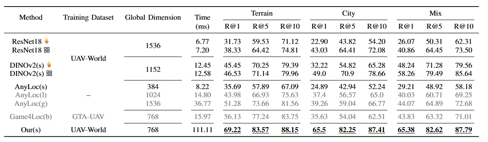
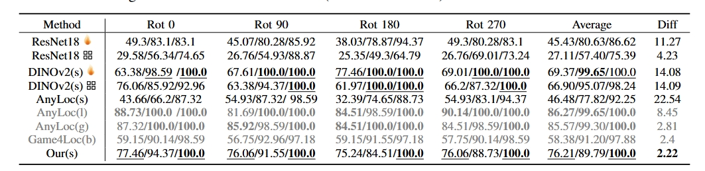
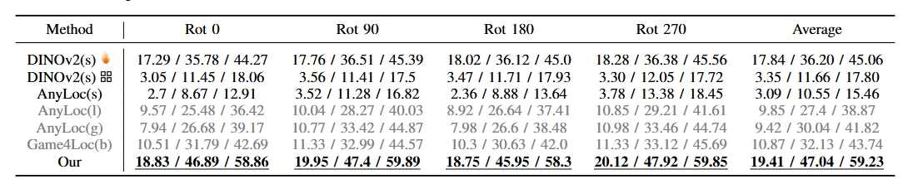
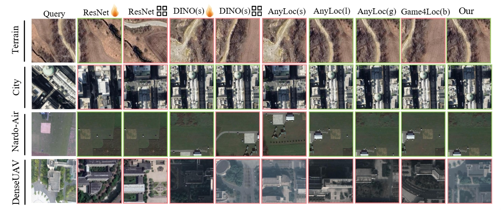

Visual geo-localization empowers unmanned aerial vehicles (UAVs) to navigate in Global Navigation Satellite System (GNSS)-denied environments. This capability is typically formulated as an image retrieval task, where UAV-acquired images are matched against geo-tagged satellite image patches. However, existing datasets are predominantly limited to single urban scenarios and often assume an ideal spatial alignment between UAV and satellite, which is unrealistic in real-world settings. To address these limitations, we present World-UAV, a large-vocabulary dataset that offers: (1) extensive scene diversity, spanning 27 unique geographical categories, and (2) realistic spatial discrepancies, incorporating significant geometric variations in rotation and scale between UAV and satellite image pairs. These geometric transformations pose substantial challenges to current global descriptor-based methods, which exhibit marked performance degradation in such scenarios. We propose UAVPlace, a novel learning approach incorporating geometric transformation encoding modules to integrate multi-perspective transformation features, thereby generating transformation-invariant global descriptors. Extensive experiments demonstrate the effectiveness of our method.

Tab: Comparative evaluation on World-UAV dataset. The best results are bold, and the best results achieved with the same backbone are underlined. Gray represents using the large model for the backbone. The indicates fine-tuned backbones, while the denotes models trained and tested with LPN.

Tab: Comparison of different methods under rotation transformations on the Nardo-Air dataset. Diff represents the difference between the largest and smallest R@1 values. (R@1/R@5/R@10)

Tab: Comparison of different methods under rotation transformations on DenseUAV dataset. (R@1/R@5/R@10)

Fig: Qualitative results with different methods.
@ARTICLE{11077664,
author={Wu, Rouwan and Deng, Jiacheng and Mou, Mingyu and He, Xingyi and Zhang, Maojun and Liu, Yu and Yan, Shen},
journal={IEEE Robotics and Automation Letters},
title={UAV-GeoLoc: A Large-vocabulary Dataset and Geometry-Transformed Method for UAV Geo-Localization},
year={2025},
volume={},
number={},
pages={1-8},
keywords={Autonomous aerial vehicles;Satellites;Urban areas;Satellite images;Training;Drones;Location awareness;Large language models;Engines;Data mining;Localization;recognition;vision-based navigation},
doi={10.1109/LRA.2025.3588061}}